Open the revised specimen · Earlier thirteen-record jellyfish review
Version 0.6.41 · one existing species · October 27, 2026 Bangkok. The earlier broad plates are replaced by a denser branching oral field on the same model throughout playback. Closed selected tissues, original spatial pigment and a supported local movement study make the oral region easier to distinguish.
Selected branches remain simplified closed exterior overlaps, without histological union or a complete mouthlet/canal lumen. Fine irregular digitata, optical scattering, individual colour/sex/stage and tissue proportions remain unmeasured. Local deformation is not a fitted feeding, adhesion or fluid mechanism. Selected eight-arm pairing, branch/frill/appendage counts, sizes, pigment, contraction amplitude and timing are unmeasured. Natural tissue optics, canal/mouthlet continuity and individual variation remain incomplete. No photorealism, accuracy percentage, independent validation or completed feeding/swimming claim.
Kerwin et al. 2025, Figure 1 was actually inspected in full: a lateral diagram and an authentic adult oral photograph show branched oral tissues and larger foliaceous appendages. Gonads are subsurface. The paper concerns microbiomes, not fitted motion. Source individuals and imaging conditions are not a universal phenotype.
The original Marco Almbauer reference is retained whole, with its public-domain attribution. Different source individuals show different tissue and appendage appearances. The 2024 pigmentation study distinguishes brown/uncoloured and blue morphs; selected collection/image-analysis text was read, not new full figures. The model does not infer a symbiont type from colour. No scientific photograph is generated or projected onto this body.
The 2022 substrate study describes contraction, passive expansion and quiescence in Cassiopea. Selected introduction and animal-care text were read. Its purchased genus-level animals and experimental/numerical flows are not imported as exact-species trajectories. The new study uses authored timing and amplitude, with fixed root and basal support. It does not solve adhesion, suction, water flow, food capture or tissue mechanics.
Nine actual v0.6.40 production states: three axes, three selected pulse times and three anatomy views. Broad regular plates, sparse oral detail and numerical pigment were visible.
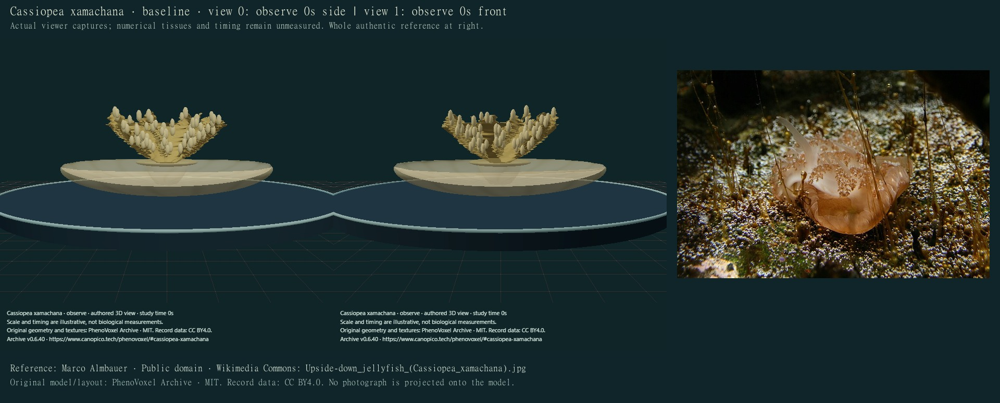
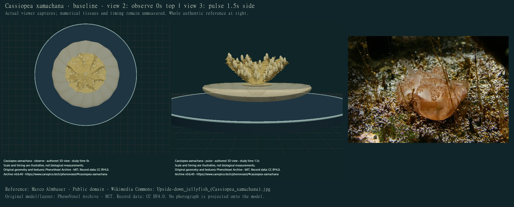
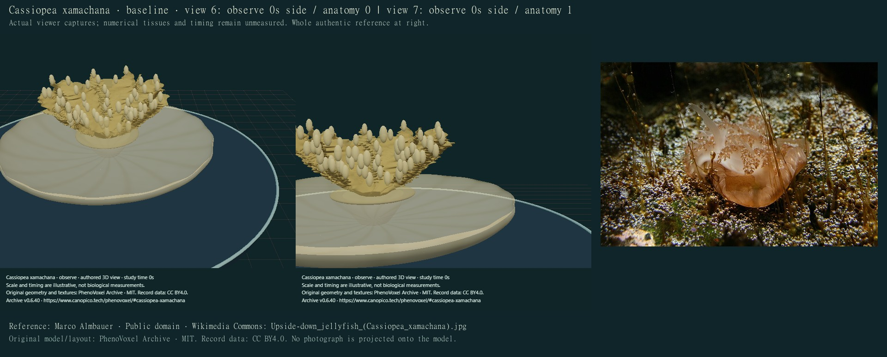
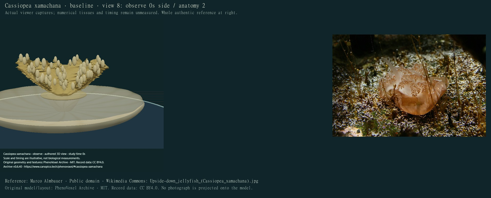
24 actual final compiled main-viewer states individually inspected on 12 credited sheets. All these final captures used software compatibility rendering; final WebGL optics were not inspected. Capture footers state the actual release; timing is authored display seconds. Renderer mode is recorded for each view. Compatibility lighting omits calibrated scattering/refraction and must not be described as a WebGL optical review.
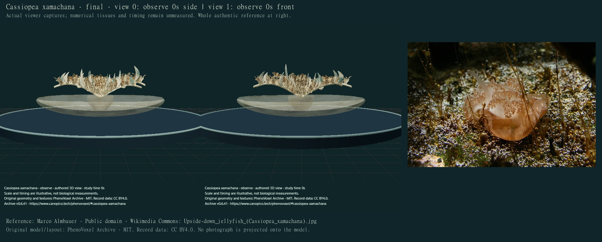
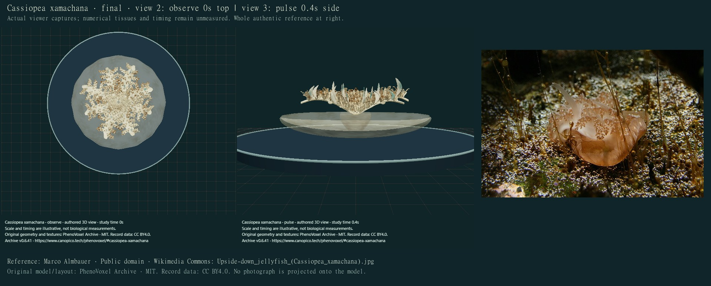
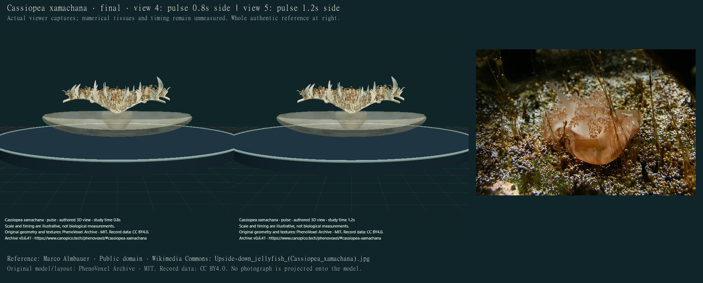
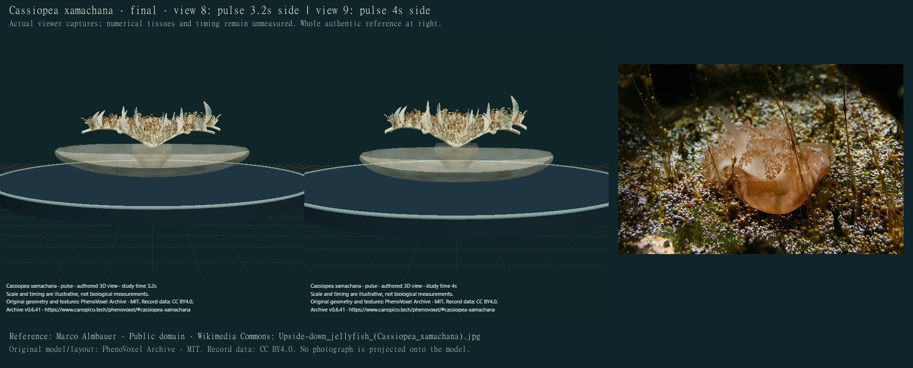
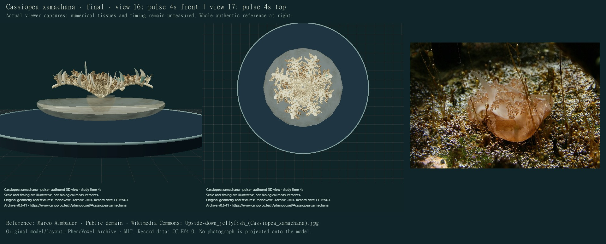
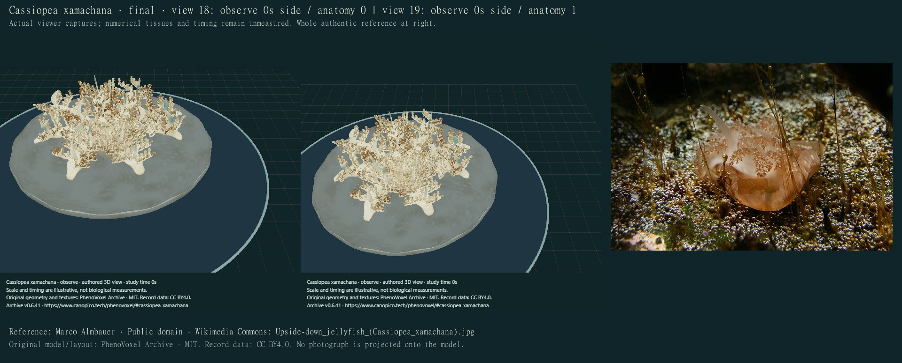
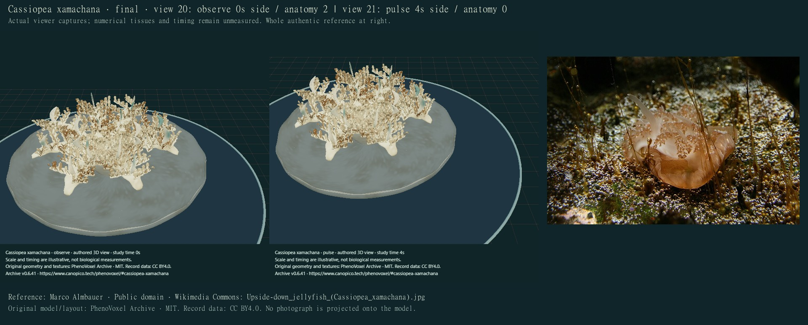
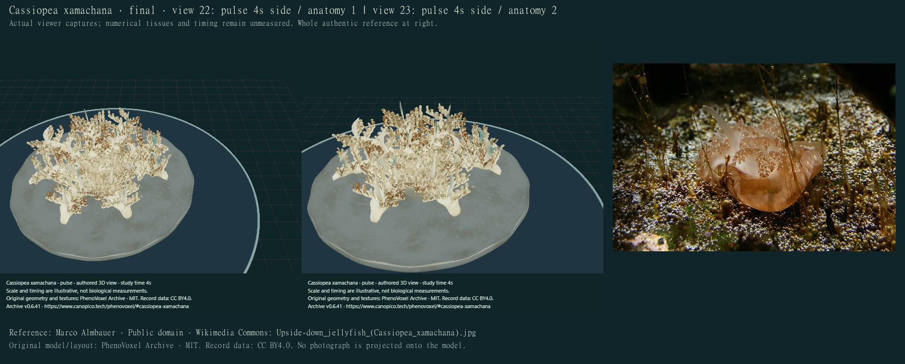
Drafts were rejected for separate petal plates, four large gaps, exposed rod-like axes, a conspicuous central cup and stiff green leaf-like appendages. Finer lateral frills, broader axes, an overlapping transparent attachment region and curved varied appendages address those visible defects. External pieces are closed but overlap: their intersections are not a fused histological reconstruction or a complete internal canal/secondary-mouth network. Repeated numerical branch rhythms and surface facets remain visible. The bell envelope and original pigment still differ from photographed animals.
Side/front/top and selected local movement frames are actual synchronous viewer captures. The full local regression passed 288 software checks. Checks cover closed triangles, fixed support, bounded deformation, retained geometry/material/pigment, exact neutral reset and source preservation. They do not establish biological accuracy, full collision freedom, physiological function or independent expert review. The other 12 jelly/colonial deeper studies and other group/model/development requests remain unfinished.
Machine-readable changes, source scopes, photo provenance and capture ledger · Current implementation inventory